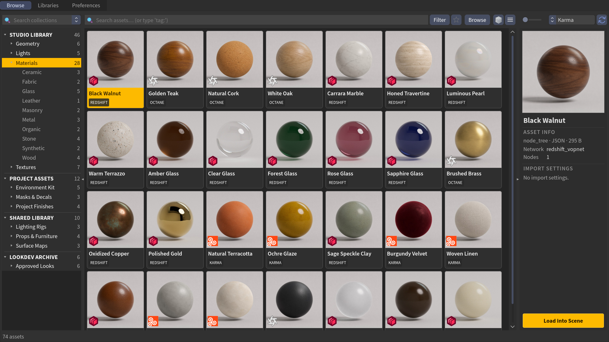
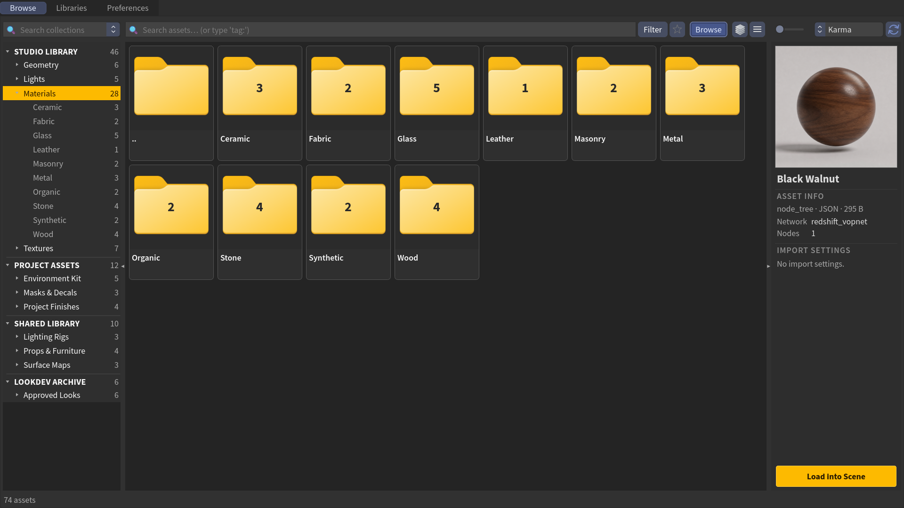

Browse tab
The Browse tab is the main workspace: a toolbar, the asset grid, a preview panel, and the navigation tree. It has two ways to navigate a library:
- Grid view shows the assets in the current folder, ready to browse, search, select, and load.
- Browse view shows the current folder's subfolders first. Open a folder tile to drill down; use Backspace to go back up.

Browse and select assets.

Drill into library folders.
For the how do I browse/search/filter/favorite workflow, see Find & organize — this page covers everything else on the tab.
Toolbar
Left to right:
| Control | What it does |
|---|---|
| Collection field | Search and jump to a saved collection. Type to autocomplete; the dropdown arrow lists all collections. |
| Search · Filter · Favorites | Covered in Find & organize. |
| Browse | Toggle Finder-style drill-down. See Find & organize. |
| Maps | Show individual texture maps instead of grouped sets. |
| View | Switch between grid and list view. |
| Thumbnail size | Slider, 64–512 px. Double-click to reset. |
| Renderer | Active renderer for material and texture imports. Your pick is remembered across sessions — this selector is the setting. |
| Reload | Reload libraries. Shift-click to force-rescan all. A plain click fully re-checks every NAS library by default (that's the accurate-but-slower option) — turn on a library's Trust Cache on Reload (nav tree, right-click) to make a plain click skip that check for it. Cloud-backed libraries with Trust Cloud Library Cache enabled behave the same way. See Remote & synced libraries. |
When any filter is active, a chip row appears below the toolbar with a Clear all link.
The asset grid
Each tile shows a thumbnail, the asset name (elided if long), and a type
badge (EXR, FBX, VDB, RS, UDIM, SEQ, ANIM / RIG for a rigged FBX,
a category, or a renderer name for saved materials). Overlays: a renderer logo (bottom-left, plus a usd logo for
USD-backed assets), the favorite star, and a small dot showing cloud/sync state
(hover the dot for a plain-language explanation).
Interaction
- Click a tile to load it into the preview panel.
- Double-click an asset to load it into the scene; double-click a folder tile to enter it.
- Ctrl / Shift-click to multi-select.
- Keyboard — arrow keys, Home/End and Page Up/Down move the selection (the preview follows); Enter loads the selected asset(s) or enters a folder tile; Backspace goes up one folder in Browse mode.
- Drag tiles out of the grid to drop them into your scene.
Right-click an asset
| Item | Action |
|---|---|
| New Directory… / New Sub-Directory… | Make a folder (with …and Move N Assets… variants in your own libraries). |
| Open Source Folder | Reveal the asset in Explorer/Finder. |
| Copy Path / Copy Relative Path | Copy the file path. |
| Delete Asset… | Delete the asset (writable libraries only). |
| Make Available Offline / Make Online-only | Cache or un-cache the asset locally (on-demand libraries). |
| Generate Thumbnail | Render a thumbnail for the asset. |
| Open Thumbnail Folder / Delete Thumbnail | Manage its cached thumbnail. |
| Delete USD Cache | Remove the baked .usd sidecar. |
Right-clicking a folder tile instead offers Open Folder, New / Rename / Delete Directory… (in writable libraries).
Preview panel
Selecting an asset fills the preview panel on the right:
- Thumbnail and name at the top.
- Asset Info — type · format · size, local-cache status, per-type details (colors, nodes, channels, UDIM tiles, frames…), and clickable tag pills (click a tag to search it).
- USD — cache state and prim/variant/material info, when relevant.
-
Import Settings — per-asset options shown only when they apply: LOD, LOP Import mode, Resolution, UV Mode, the instance method (Copy to Points / Scatter Instances (H22)), Loop (any asset baking to animated USD — rigged/animated FBX or an
$Fsequence), and toggles for Create Instances, Material Only, Create Material, and Import as Atlas.Create Instances and the instance method are sticky — the choice carries to the next card you click. Create Instances is unavailable (and says why) on an
.abcframe sequence; see Animation & sequences.
The primary Load into Scene button (bottom) imports the asset with those settings. With Material Only ticked it loads just the shader, no geometry.
Per-asset overrides
Import Settings here override the Preferences defaults for this one asset — handy for pulling a lower LOD or a material-only copy without changing your global settings.
Navigation tree
The left tree mirrors your libraries and their folders. Names show uppercased, with
optional asset counts (toggle in Preferences). A
Favorites node appears at the top whenever you have favorites, and a
Local Library node pins near the top when
Show $HIP/tex is on and a tex
folder sits next to the current scene file.
Right-click a folder for:
| Item | Action |
|---|---|
| Open Folder · Copy Path | Reveal or copy the folder. |
| New / Rename / Delete Directory… | Manage folders (writable libraries). |
| Reload This Library | Rescan just this library — always checks the source fully, even when Trust Cache on Reload is on. |
| Trust Cache on Reload | (NAS libraries only) Skip re-checking this library on a plain Reload — see Remote & synced libraries. |
| Make Available Offline | Cache the whole folder (on-demand libraries). |
| Disable on This Machine | Turn the library off locally. |
| Scan on This Machine | (any folder or collection below the root) Uncheck to stop scanning it here — it stays in the tree as a dimmed (not scanned) entry; right-click it again to re-include it. Works on vendor collections too (a single Greyscalegorilla material pack), where JElib skips that pack's folders by their shared name prefix. Per machine, so a NAS-bound laptop can skip an unused vendor subfolder (a Greyscalegorilla hdris, say) while a workstation keeps it. Not offered where a collection's folders can't be told apart from its neighbours' (some Quixel categories). Hide the dimmed entries with Show Unscanned Folders in Preferences. |
| Remove from Browser | Drop the library from the list (files untouched). |